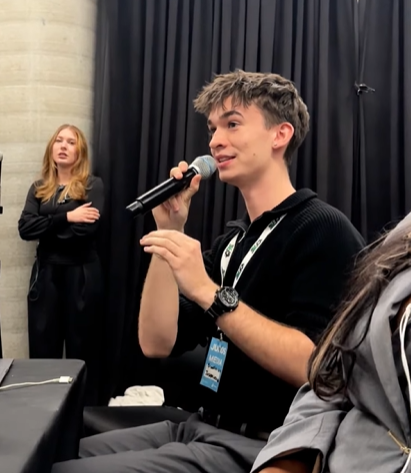

Biography

Good afternoon! My name is Joseph Lozinski, and I am a passionate second-year Digital Enterprise Student at the Univesity of Toronto Mississuaga. I have an innate love for digital media, which I hope to represent within my site as you explore. I love all forms of media, but more specifically love video editing. I currently work as a social media intern for the leading radio station on Campus and in mississauga, CFRE! I have done exstensive work with artists, brands, labels, and more. Feel free to navigate and discover some of my work, prior professional experience, and links to contact me or see my process in creation on a project such as this. Thank you! You can learn more about my professional career here!
Highlights
WORK IN PROGRESS See more on my portfolio page, to view the images in larger sizes and other works!